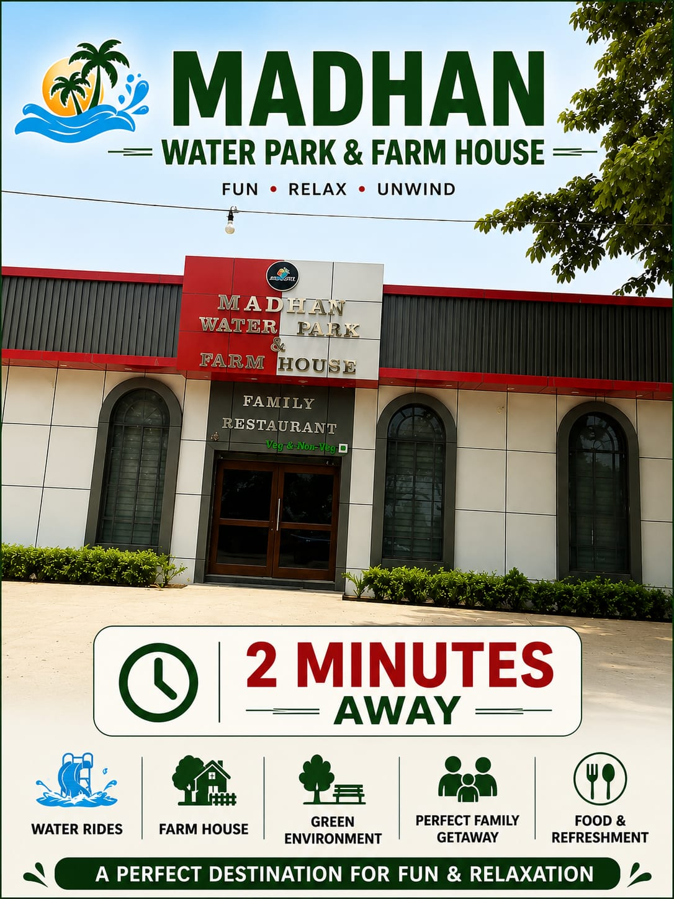

Agricultural Land vs Residential Plot in UP: Conversion Rules, Legal Risks & Why Ganga Residency is the Safe Choice

Investing in real estate across Delhi NCR and Western Uttar Pradesh has accelerated rapidly in 2026, driven by high-speed corridors like the Ganga Expressway and Delhi-Meerut Expressway. However, prospective buyers frequently face a critical dilemma: Should you buy raw agricultural land or invest in a pre-approved residential plot at Ganga Residency?
While raw agricultural land near garhmukteshwar often comes with an enticingly low upfront per-acre price, converting agricultural land into non-agricultural (residential) property in Uttar Pradesh involves complex legal hurdles, bureaucratic delays, and steep conversion fees. Constructing a home on un-converted agricultural land without official non-agricultural declaration is illegal in UP and can result in demolition notices, heavy penalties, or denial of bank loans.
In this comprehensive legal and financial guide, we break down Uttar Pradesh land conversion laws (Section 80 of the UP Revenue Code, 2006, formerly Section 143), stamp duty differences, municipal approval steps, and why purchasing a 100% legally verified plot at Ganga Residency eliminates legal risk while securing higher capital growth.
Table of Contents & Quick Links
- 1. Key Differences: Agricultural Land vs Residential Plot
- 2. UP Land Conversion Rules: Section 80 (Formerly Section 143)
- 3. Step-by-Step Land Conversion Process in UP
- 4. Hidden Costs & Risks of Raw Agricultural Land
- 5. Township Infrastructure Walkthrough
- 6. Why Ganga Residency Offers 100% Legal Peace of Mind
- 7. Direct Side-by-Side Comparison Matrix
- 8. Frequently Asked Questions (FAQs)
1. Key Differences: Agricultural Land vs Residential Plot
In Uttar Pradesh, land classification determines legal usage, tax liability, utility availability, and resale potential. Purchasing agricultural land means the government recognizes the parcel purely for farming or allied activities.
Agricultural Land Characteristics
- Governed by UP Revenue Code restrictions on land ceiling and non-farmer buyers.
- Residential construction is illegal without official Section 80 non-agricultural declaration.
- No access to municipal water, underground drainage, or sanctioned electricity connections.
- Banks will not grant home construction loans on raw agricultural land.
Ganga Residency Residential Plot
- 100% Non-Agricultural (NA) converted freehold residential land.
- Immediate eligibility for home construction and registry.
- Equipped with asphalt roads, street lights, water supply, and gated security.
- Approved for easy bank financing and seamless home loan processing.
2. UP Land Conversion Rules: Section 80 (Formerly Section 143)
Under the Uttar Pradesh Revenue Code, 2006 (Section 80), any agricultural land holding must be formally declared as "non-agricultural" by the Sub-Divisional Magistrate (SDM) or District Collector before any non-farming activity—such as building a residential villa, setting up a shop, or developing a housing layout—can legally take place.
Warning on Unapproved Colonies:
Buying unauthorized plots in unapproved "farmhouse schemes" or illegal sub-divisions on agricultural land without Section 80 declaration leaves buyers vulnerable to demolition drives by regional development authorities. For complete peace of mind, review our legal breakdown on Section 143 vs Section 144 Land Approvals in UP.
3. Step-by-Step Land Conversion Process in UP
If an individual attempts to independently convert agricultural land to residential status in garhmukteshwar or Hapur district, they must undergo an extensive 6-step legal process:
- Application Submission: File an application to the Sub-Divisional Magistrate (SDM) along with Khasra, Khatauni (record of rights), and site maps.
- Revenue Inspector Inspection: The Tehsildar and Lekhpal visit the site to verify boundaries, current land usage, and road access.
- No-Objection Certificates (NOCs): Obtain individual NOCs from Pollution Control Board, PWD (Public Works Department), Forest Department, and local development authorities.
- Public Notice & Objections: A 30-day public notice is issued to invite objections from adjacent landholders regarding ownership disputes.
- Payment of Conversion Fees: Pay land conversion charges (typically 1% to 2% of the circle rate or prevailing market value as prescribed by UP government).
- Section 80 Order Issuance: The SDM issues the formal non-agricultural order, updated in revenue records (Khasra entry).
This process can take anywhere from 6 to 18 months. At Ganga Residency, all individual plot parcels have already completed legal conversion and master plan approvals, enabling immediate registry and hassle-free construction.
4. Hidden Costs & Risks of Raw Agricultural Land
Buyers attracted by cheaper per-sq-yard rates on agricultural land often overlook major hidden expenses and technical constraints:
- Conversion Duty & Stamp Duty Differential: Stamp duty on residential property in UP is calculated on high residential circle rates, whereas agricultural land carries lower circle rates. When agricultural land is converted, the owner must pay the difference in stamp duty and conversion taxes.
- Infrastructure Provisioning Costs: Agricultural land lacks electric transformers, underground sewer lines, paved internal roads, and water pipelines. Installing these independently adds massive capital costs.
- Ceiling and Mutation Restrictions: Non-farmers or corporate entities face statutory restrictions when acquiring agricultural land in UP beyond set holding limits.
- Encroachment Vulnerability: Unfenced agricultural land in outer garhmukteshwar is susceptible to boundary disputes and illegal encroachment.
Save Time & Money with Pre-Approved Plots
Avoid bureaucratic delays and legal conversion stress. Explore our fully approved residential plot options starting under 20 Lakhs with crystal-clear title deeds at Ganga Residency garhmukteshwar.
5. Township Infrastructure Walkthrough
Discover how Ganga Residency transforms green freehold land into a modern, fully equipped gated community with wide internal roads, street lighting, and dedicated security gates. Watch our official walkthrough video below:

6. Why Ganga Residency Offers 100% Legal Peace of Mind
Ganga Residency garhmukteshwar is designed specifically for homebuyers and smart investors looking for secure, high-ROI residential land near the sacred Ganga river and Ganga Expressway.
Key advantages of choosing Ganga Residency include:
- Clear Title Freehold Land: Every plot comes with 100% direct freehold ownership, clear chain of title, and individual mutation records.
- Strategic Proximity to Ganga Expressway & NH-9: Positioned near major transit routes for effortless commuting to Noida, Ghaziabad, and Delhi.
- Flexible Plot Sizes: Choose from 100 sq. yd. and 150 sq. yd. plot dimensions tailored to your budget and villa design.
- World-Class Township Amenities: Includes a gated clubhouse, badminton court, lush green parks, and dedicated library space.
- Vastu-Compliant Layouts: Plots designed in accordance with Vastu Shastra principles for maximum prosperity and positive energy.
- Sister Township Synergy: Backed by the success of sister township Ganga County, setting a benchmark for quality infrastructure in Western UP.
7. Direct Side-by-Side Comparison Matrix
Compare raw agricultural land against Ganga Residency residential plots across critical operational parameters:
| Parameter | Raw Agricultural Land in UP | Ganga Residency Residential Plot |
|---|---|---|
| Legal Land Status | Agricultural (Farming only) | 100% Non-Agricultural (NA) Freehold |
| Residential Construction | Illegal without Section 80 approval | Permitted immediately after registry |
| Bank Loan Support | Not available for residential construction | Eligible for pre-approved home/plot loans |
| Internal Infrastructure | Unpaved, no electricity or drainage | Wide asphalt roads, streetlights, drainage |
| Gated Security | None (Prone to encroachment) | Gated boundary, 24/7 security & staff |
| Appreciation Rate (2026) | Slow (Limited end-user demand) | High appreciation near Ganga Expressway |

8. Frequently Asked Questions (FAQs)
Can an NRI or non-farmer buy agricultural land in UP?
Non-farmers and NRIs face legal complications when purchasing raw agricultural land in UP due to land ceiling regulations and mutation rules. However, NRIs can freely purchase 100% converted freehold residential plots at Ganga Residency without any agricultural restrictions.
What documents must I verify before buying a plot in garhmukteshwar?
Always verify Khatauni (Record of Rights), non-encumbrance certificate (EC), Section 80 non-agricultural conversion order, and approved layout plans. Read our complete guide on Documents to Check Before Booking a Plot.
Is Ganga Residency suitable for building a weekend holiday home?
Yes! Thanks to clean air near Garh Ganga, serene natural surroundings, and rapid expressways, many NCR buyers purchase plots here to build custom vacation villas. Learn more about Living near Garh Ganga: Daily Life & Community.
What are the plot pricing options at Ganga Residency?
Ganga Residency offers budget-friendly plot investment opportunities. Check out our detailed breakdown on Affordable Residential Plots Under 20 Lakhs or view the official Price List.
Explore Related Blog Guides & Market Insights
Enhance your land investment knowledge with our internal guides and expert market reviews: